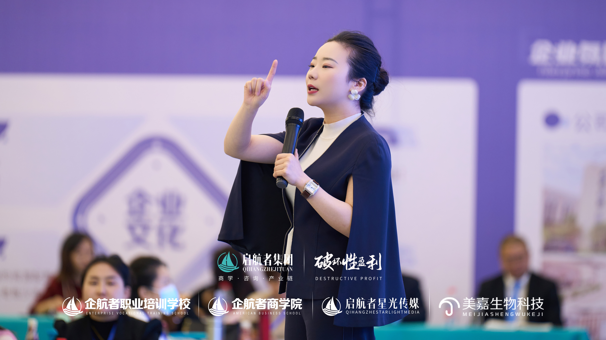
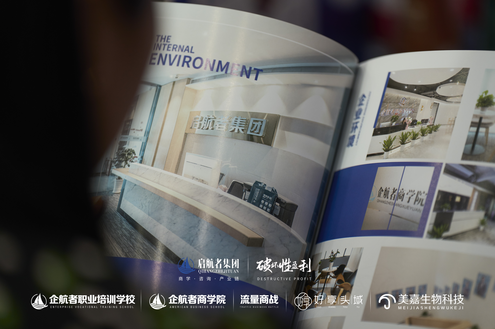
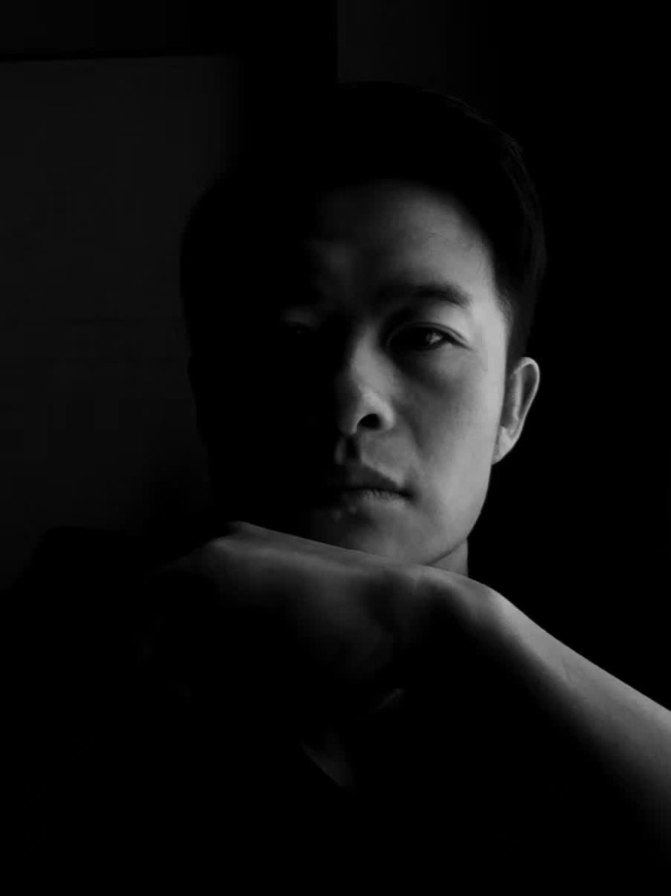

联系
Contact

致虚极，守静笃
शून्यताम् अत्यन्तं प्राप्नुहि · शान्तौ दृढं तिष्ठ
Works

On-Site Production
负责活动与会场的完整现场执行工作，包括会场照片拍摄、实时直播、现场布光与设备调试。曾服务美美咖、美亿齿、好享头域、面纪水光以及湖北启航者营销策划有限公司等品牌与平台，熟悉直播过程中的突发情况处理与流程把控。能够在现场完成稳定的多机位拍摄与直播输出，确保光线、设备与画面质量达到可直接使用的标准。

Content & Production
覆盖从素材到成片的后期制作与内容生产。熟练使用达芬奇进行视频剪辑与调色，同时结合 Grok、Cursor、ChatGPT、Codex 等工具完成视频封面设计、网页设计、会议纪要整理、PPT 制作与合同起草。了解抖音等主流平台的投放逻辑，具备个人 IP 打造经验。熟悉最新 AI 短剧全流程，可从剧本创作、人物资产设计、场景设计、分镜脚本到视频生成及后期剪辑调色完整推进。
About

涂锐 / TURUI
服装设计出身，专注影像创作。
受贾樟柯、北野武、久石让与山本耀司的影响，喜欢用镜头捕捉安静而有时间感的瞬间。
日常拍摄小孩、老人、植物、动物与风景，也会做剪辑、直播间搭建与 AI 视频。
理想是在山里翻修一栋老房子，养猫、种菜、喝茶、看书、写字、拍照。
喜欢独处与徒步。
Contact